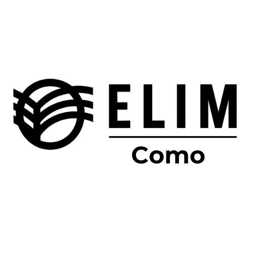
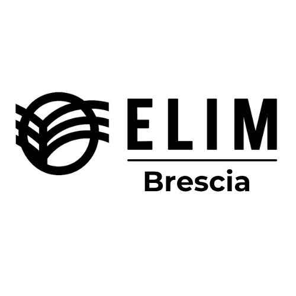
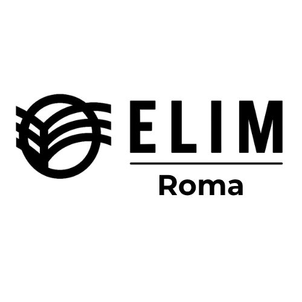
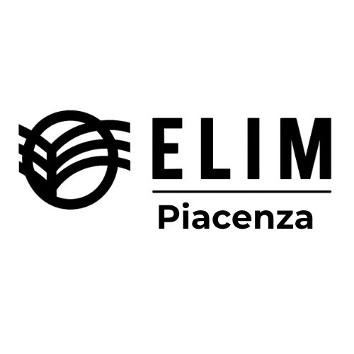

Home
|
Chi Siamo
|
Contatti
Iglesias / Misión Cristiana Elim – Italia
Selecciona la sucursal y visita su Facebook oficial.

Iglesia Elim Como, Italia
Ir al Facebook de Como
Misión Cristiana Elim, Torino
Ir al Facebook de Torino
Misión Cristiana Elim, Milán
Ir al Facebook de Milán
Iglesia Elim, Napoli
Ir al Facebook de Napoli

Misión Cristiana Elim, Brescia
Ir al Facebook de Brescia

Iglesia Elim, Roma
Ir al Facebook de Roma

Iglesia Elim, Piacenza
Ir al Facebook de Piacenza